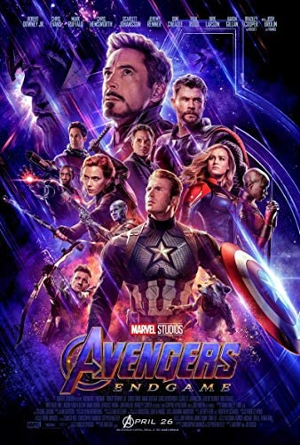

Top 10 Greatest Movies of All Time
Let's face it, there are a lot of different movies out there for people to watch. With so many genres, and types of movies, it can be hard to find something to watch on any given Friday night. In order to work to fix this problem, below is a list of what, in my own opinion, are some of the greatest movies and a description of what makes them so great.
*Disclaimer*
This article is written completely in my opinion, and therefore is completely biased. Also, my top 10 movie list changes quite frequently, so keep watch for updates. Read at your own risk... Enjoy!
Movie Number 10
Jurassic Park
I know what you are thinking, "Jurassic Park this early!" I know, it is early, but I believe I found nine other movies that beat this one out for a higher spot. However, to make it on the list at all is an achievement. Don't get me wrong, a bunch of wild dinosaurs running around and eating people makes a great movie. The fact that the music for this film is done by John Williams makes the movie even better.
Click here to learn more about this movie!
Movie Number 9
Star Wars: The Rise of Skywalker
Ahhhh, yes... a good old, reliable Star Wars movie. Can't go wrong with a Star Wars movie. I like this particular piece of the series because I felt it was a good ending to such a great group of movies. Full of action, heroism, and adventure! Also, another movie with music done by John Williams... What a legend...
Click here to learn more about this movie!
Movie Number 8
Avengers: Infinity War
I really like this movie. This movie is one of my favorite movies that Marvel has made. I belive it was extremly well done and made. It set up the next movie, Endgame (foreshadowing...) perfectly to be the climax of the Avengers series.
Click here to learn more about this movie!
Movie Number 7
Star Wars: Revenge of the Sith
"Another Star Wars movie!?!?! This guy is crazy!" FIrst off, no I'm not, I am good at picking movies that are great to watch. Second, when was the last time you watched the Revenge of the Sith? It is a great movie, one worth watching. The action in this movie is amazing, and is definitely one of my favorite Star Wars movies.
Click here to learn more about this movie!
Movie Number 6
National Treasure
I can't say enough about this movie and how good it is. It is a very patriotic movie, which is porbably why I like it. Not only is the movie fun to watch, but the history included in it is intriging. I enjoy the movie everytime I watch it!

Click here to learn more about this movie!
Movie Number 5
Finest Hours
In my opinion, any movie that is so good it makes you a little seasick when you watch it, it deserves to be on your top 10 list. This movie is about a daring rescue by the Coast Guard of a freighter that snapped in half. Yes, it is as good as it sounds. I could watch that movie over and over... oh wait, I already have...
Click here to learn more about this movie!
Movie Number 4
Star Wars: The Force Awakens
Yes, I put three Star Wars movies on my top 10 list... I see nothing wrong with that. Needless to say, I enjoy a little "Long, long ago, in a galaxy far, far away"... This movie is obviously my favorite out of all of them. I like the action and battle scenes from this movie. Being the first movie out of the last three, I believe in introduces the next two perfectly. It is a must watch!
Click here to learn more about this movie!
Alright, here we go... the top three movies of all time!
Movie Number 3
Avengers: Endgame
As mentioned before in the Infinity War section, Endgame is the movie right after. This is the last movie in the Avengers series, and is a wonderful end to the movies with all of our favorite heroes. I won't spoil it, but the end of the movie, when paired with the soundtrack, gets pretty emotional. I don't usually get emotional over movies, but this one got me...\
Click here to learn more about this movie!
Movie Number 2
The Day After Tomorrow
You know how I said at the begining of the page that my list changes often? That does not count with this next movie. The Day After Tomorrow has long been in my top 5 favorite movies, and it still is to this day. I don't know what it is, but maybe the reason I like this movie is because of all of the freaky weather. Something about this movie makes it one of my all-time favorites!
Click here to learn more about this movie!
Movie Number 1
Miracle
Nothing quite gets me as excited as sports does. WHat happens when you mix one of the greatest sports ever with the actor Kurt Russel? How about the greatest movie of all time. This movie is insanely good, and definitley re-watchable. In fact, I watched it a couple of weeks ago for the first time in a while. Yes, I know what happened at the end of the movie... Did that make the movie any less enjoyable? Not at all. I was on the edge of my seat for the last 45 minutes of the movie... Needless to say, Miracle is my favorite movie ever, and you should go watch it.
Click here to learn more about this movie!
Well, there you go... my completely biased, Star Wars heavy, action packed, top ten list of movies! Hope you enjoyed it, and don't hate me to much.